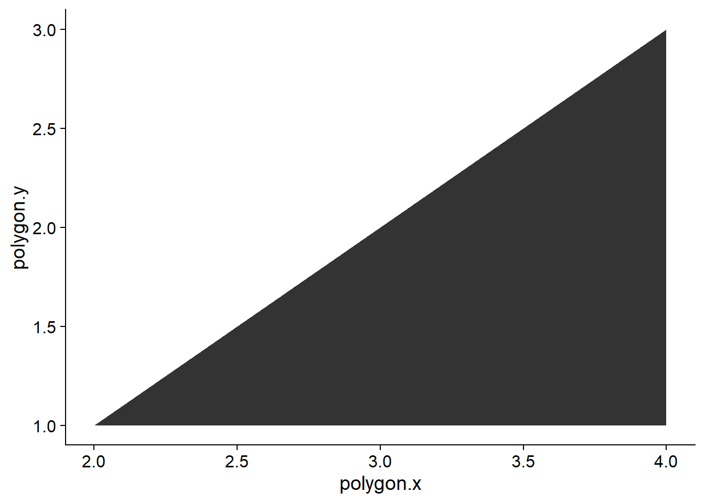
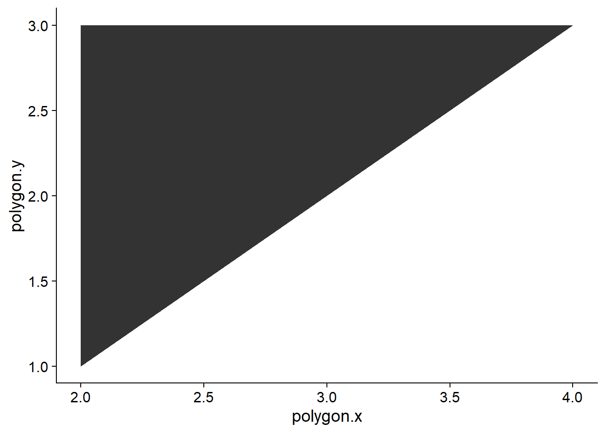
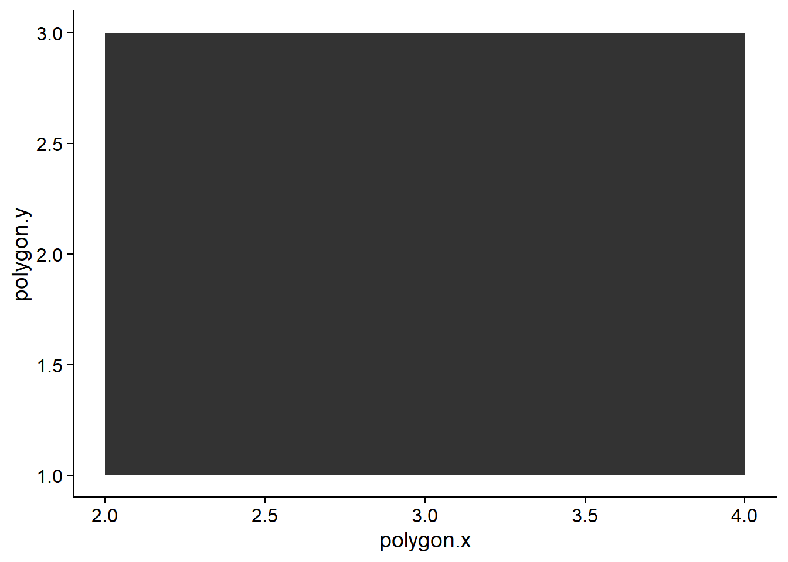
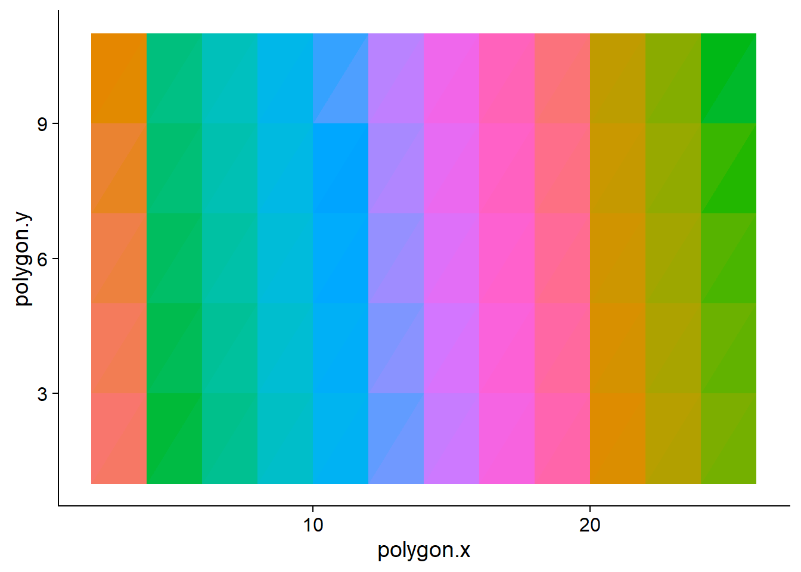
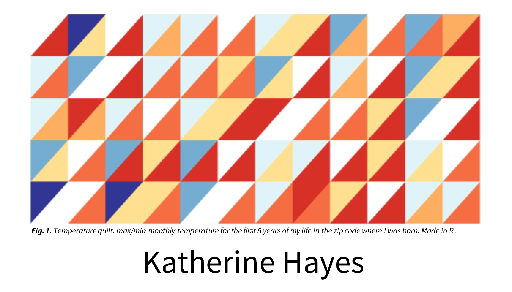

triangle = data.table(polygon.x = c(2,4,4), polygon.y = c(1,1,3))
ggplot(triangle, aes(x = polygon.x, y = polygon.y)) + geom_polygon()
I’m making business cards for the first time. It feels odd. To make it feel less odd, I wanted to come up with some sort of fun, colorful graphic to cover one of the sides. But I didn’t feel great about any of the stock designs I was seeing, and wanted something that felt more like me.
In my free time, I’m a very amateur fiber arts nerd. Even calling it “fiber arts” gives me away immediately. I used to sew some of my own clothes (mostly during covid), and knit often on zoom calls and in meetings. Technically, I’ve made a quilt before.
So, I landed on a quilt theme. But making tiny even triangles in powerpoint seemed fussy, and I wanted the colors to be random but somehow still cohesive.
From there it was a hop and a skip over to temperature quilts - a craft tradition where each day (or month) of the year gets a color based on the temperature, and you knit or sew them together into a record of the year’s weather. Instead of yarn, I’d use ggplot.
I downloaded 5 years of temperature from the General Mitchell Airport weather station, emailed to me in the form of a csv of daily maximum and minimum temperature.
| STATION | NAME | DATE | TMAX | TMIN |
|---|---|---|---|---|
| USW00014839 | MILWAUKEE MITCHELL AIRPORT, WI US | 1994-01-01 | 43 | 25 |
| USW00014839 | MILWAUKEE MITCHELL AIRPORT, WI US | 1994-01-02 | 29 | 20 |
| USW00014839 | MILWAUKEE MITCHELL AIRPORT, WI US | 1994-01-03 | 30 | 28 |
| USW00014839 | MILWAUKEE MITCHELL AIRPORT, WI US | 1994-01-04 | 29 | 12 |
| USW00014839 | MILWAUKEE MITCHELL AIRPORT, WI US | 1994-01-05 | 28 | 5 |
| USW00014839 | MILWAUKEE MITCHELL AIRPORT, WI US | 1994-01-06 | 31 | 26 |
Each row in the raw data is a single day. I want one value per month per year, so I’ll summarize down to monthly minimums and maximums. The data includes a partial year (1999), which I’ll drop so each row in the quilt represents a complete year.
Next was figuring out how to plot right angle triangles. You can do it with geom_polygon() by setting the x,y coordinates for each of the three corners of the triangle.
triangle = data.table(polygon.x = c(2,4,4), polygon.y = c(1,1,3))
ggplot(triangle, aes(x = polygon.x, y = polygon.y)) + geom_polygon()
To produce the other side of the triangle, you modify the coordinate for the second corner, like so.
left.triangle = data.table(polygon.x = c(2,2,4), polygon.y = c(1,3,3))
ggplot(left.triangle, aes(x = polygon.x, y = polygon.y)) + geom_polygon()
Putting them together gets you both sections of the quilt block.
left.triangle = data.table(polygon.x = c(2,2,4), polygon.y = c(1,3,3), triangle = "left")
right.triangle = data.table(polygon.x = c(2,4,4), polygon.y = c(1,1,3), triangle = "right")
both.triangle = rbind(left.triangle, right.triangle)
ggplot(both.triangle, aes(x = polygon.x, y = polygon.y, group = triangle)) + geom_polygon()
So, I needed 12 months of columns, and decided I had room for 5 years (rows).
To tile this into a full quilt grid, I need to offset each block by 2 units in x and y. I started by building each row by hand to check if it worked, but eventually wrote a loop over rows — x-offsets are precomputed once and reused, and the y-offset for each row is just (r - 1) * 2.
# map each year to a row index (1 = earliest year)
year_ranks <- mke_sum %>%
distinct(year) %>%
arrange(year) %>%
mutate(triangle_row = row_number())
n_cols <- 12 # months
n_rows <- max(year_ranks$triangle_row) # years in data
# x-offsets: each block is 2 units wide
add_vector <- c(0, 0, 0)
out_vector <- vector()
for (i in 1:n_cols) {
out_vector <- c(out_vector, add_vector)
add_vector <- add_vector + 2
}
# build all rows and columns in a single loop
all_blocks <- data.table()
for (r in 1:n_rows) {
y_base <- (r - 1) * 2 # each row is 2 units tall
right_tri <- data.table(
polygon.x.base = rep(c(2, 4, 4), times = n_cols),
polygon.y = rep(c(1, 1, 3) + y_base, times = n_cols),
triangle_pos = "right",
column = rep(1:n_cols, each = 3),
row = r
)
right_tri$polygon.x <- right_tri$polygon.x.base + out_vector
left_tri <- data.table(
polygon.x.base = rep(c(2, 2, 4), times = n_cols),
polygon.y = rep(c(1, 3, 3) + y_base, times = n_cols),
triangle_pos = "left",
column = rep(1:n_cols, each = 3),
row = r
)
left_tri$polygon.x <- left_tri$polygon.x.base + out_vector
all_blocks <- rbind(all_blocks, right_tri, left_tri)
}
all_blocks$triangle_id <- paste0("c", all_blocks$column,
".r", all_blocks$row,
".", all_blocks$triangle_pos)
all_blocks <- all_blocks %>% select(!polygon.x.base)
ggplot(all_blocks, aes(x = polygon.x, y = polygon.y,
group = triangle_id, fill = triangle_id)) +
geom_polygon() +
theme(legend.position = "none")
Each quilt block gets two triangles: the upper-left for the monthly minimum temperature, the lower-right for the maximum. I’ll assign colors across eight temperature bins — a diverging palette from deep blue (cold) through white (mild) to deep red (hot).
The triangle_id links each temperature observation to its block in the geometry. Rather than hardcode which row each year maps to, I rank years in order so the mapping stays correct regardless of which years are in the data.
mke_colors <- left_join(mke_sum, year_ranks, by = "year") %>%
pivot_longer(cols = c(min, max), names_to = "type", values_to = "temp") %>%
mutate(
col = case_when(
temp < -10 ~ "#313695",
temp < 10 ~ "#74add1",
temp < 30 ~ "#e0f3f8",
temp < 50 ~ "white",
temp < 60 ~ "#fee090",
temp < 70 ~ "#fdae61",
temp < 90 ~ "#f46d43",
TRUE ~ "#d73027"
),
triangle_column = month,
triangle_id = paste0("c", triangle_column,
".r", triangle_row,
".", ifelse(type == "min", "left", "right"))
)
color_extract <- mke_colors %>%
ungroup() %>%
select(triangle_id, col)quilt <- merge(all_blocks, color_extract, by = "triangle_id")
ggplot(quilt, aes(x = polygon.x, y = polygon.y,
group = triangle_id, fill = col)) +
geom_polygon() +
scale_fill_identity() +
theme_void() +
theme(legend.position = "none")
yay!!
I did some edits in powerpoint, and ended up with the following:
